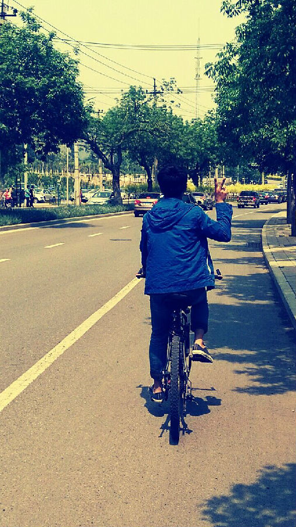
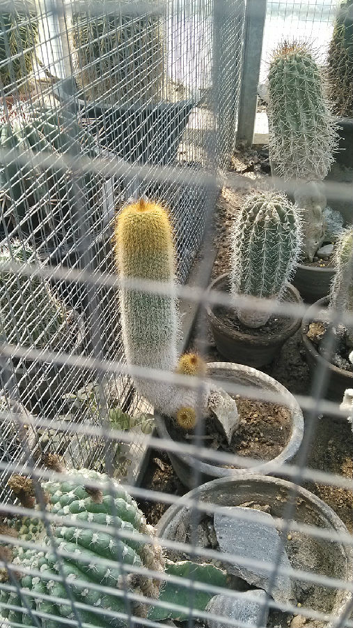
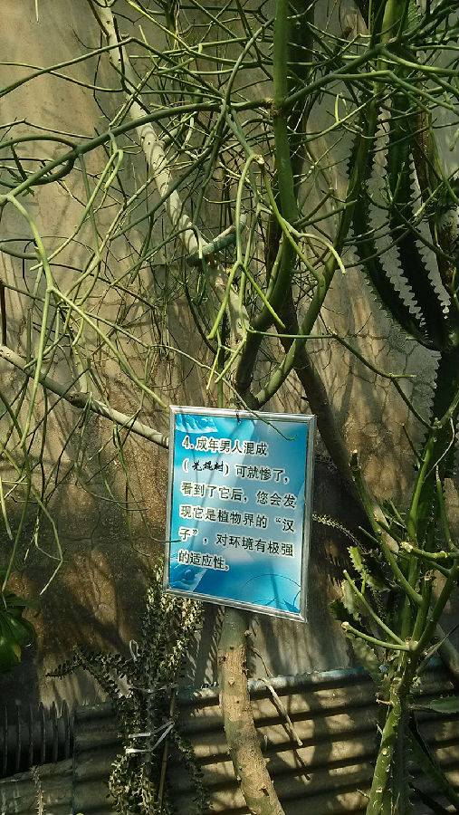
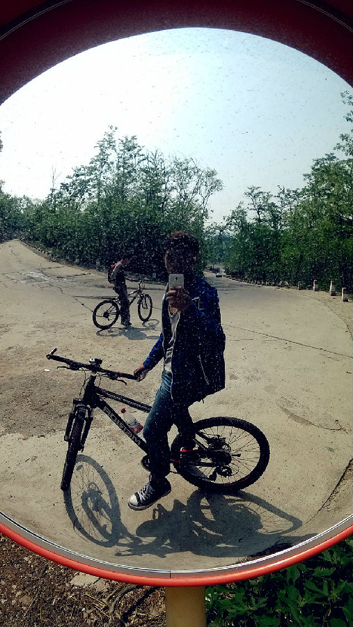
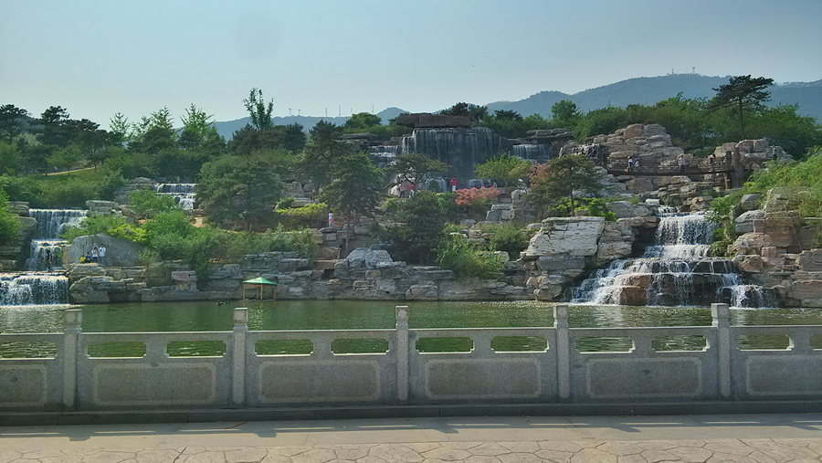

一场说走就走的旅行——纪念大学第一次骑行；这学期第一次约女神吃饭！
今天睡到10点钟左右，起床，开始了一场说走就走的旅行。
收拾背包（钱包和手机 = =），整理心情，便开始了大学以来第一次骑行。
目的地香山，很近，全程不过12Km左右。学校前门出发，绕道后门，八大处，香山南路，香山。

(ps:论基友会拍照的重要性！)
一路骑行而上，人多车多，柳絮也多。走走停停，看人看风景。
到了香山门前，并没有想爬山的感觉。仰望香山，感受风从面前流过，感受自然的博大。
中午麦当劳点了餐却没有座位，于是到了植物园想用午餐，之后游园。
造型奇特的植物~.~


完事之后路过一条上山的路，并不知道通向哪里。不过却费力骑上，刚上了一截路便感觉斜坡的满满的恶意。不如顺坡而下，享受速度带来的快感。

想起高三周日回学校的时候的场景，骑车在众多拉人的三轮车中穿行，超越，拉开距离，得到快感和满足。只可惜时光一去不复返。
然后路过森林公园，被瀑布吸引而去。

想起去年五一去十渡的那座山，那个瀑布。还有我们坚持爬到山顶，饮得一口泉眼之甘露。
回到学校，晚，如愿和女神共进晚餐！hiahia~